Mark
brand/mark.svg
Every image in this kit is a real photograph, taken by someone else and given away (CC0) by Poly Haven. I didn't take them. I wrote the code that rounds them down to one bit, to ASCII, to lines and dots.
That's the brand. Show the source, show the process, show the numbers. Some products made money. Some didn't. The site says which.
A proposal for the hero. Drag anything. "Tidy" lines it up with GSAP Flip, "Scatter" puts it back. Captions say exactly where each image came from and what was done to it.
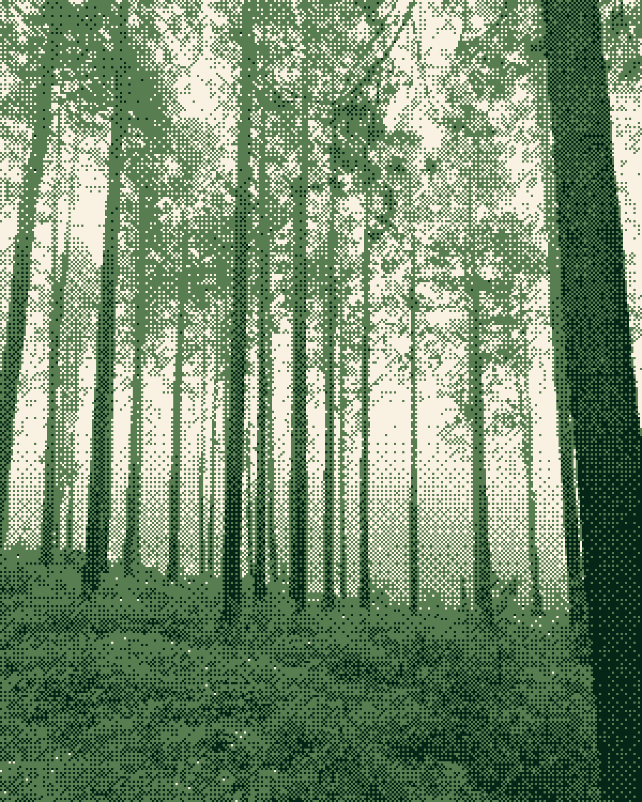
misty_pines / bayer 3-tone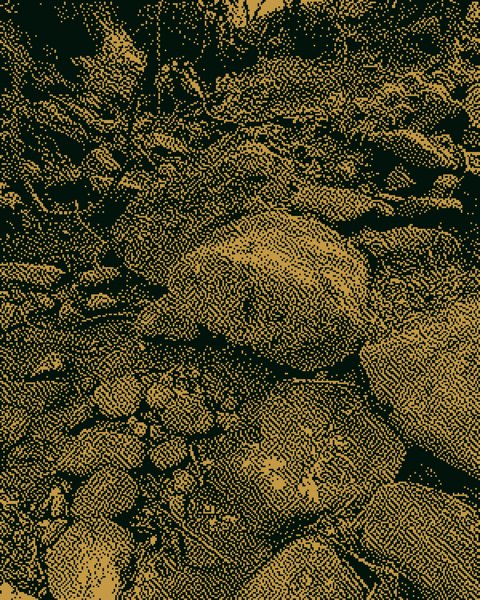
mossy_forest / atkinson fig. 01 / MCP Emails / $782 MRR
fig. 01 / MCP Emails / $782 MRR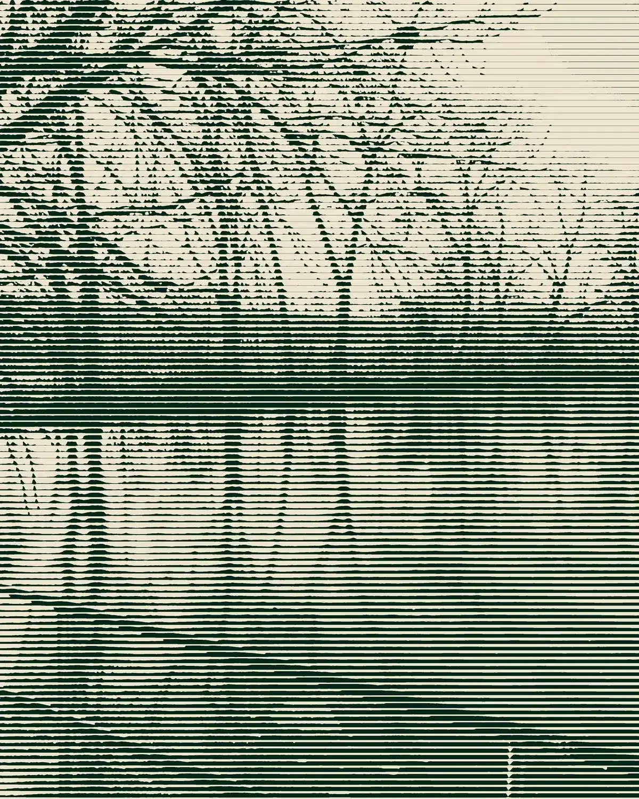
frozen_lake / breathing lines misty_pines, looking up / halftone
misty_pines, looking up / halftone fig. 02 / Fun Libs / 113,000+ installs
fig. 02 / Fun Libs / 113,000+ installs birchwood / 4-tone
birchwood / 4-tone

The mark is a pixel A that is still rendering: solid at the base, dithering out toward the top. The brass block is a cursor. It blinks at 1 Hz on the site.

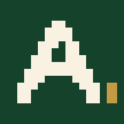
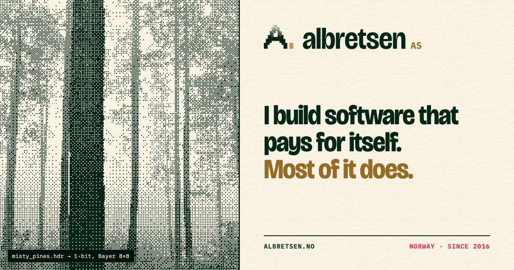
Defined in OKLCH. Seed hue 12° is used for exactly one colour, Pulse, and only for the truth nobody likes: paused, retired, failed, errors.
Usage by area: cream 52 / cream-2 10 / deep 22 / forest 8 / brass 5 / moss 2 / pulse 1. Brass-deep is the only brass allowed for text on cream (4.6:1).
Bricolage Grotesque (OFL) for statements, at width 88 and optical size 96. IBM Plex Mono (OFL) for everything that is a fact: numbers, captions, sources, code.
Built at 17. No marketing.
Some of these made money. Some didn't.
Takes one outside engagement at a time.
claude mcp add albretsen https://albretsen.no/mcp
The ASCII ramp above is the real one every renderer in this kit uses, darkest to brightest. Plex Mono's even widths are why the ASCII art lines up.
Each hero ships at 1x and 2x. Dithered files are lossless and tiny, because one bit compresses well. Drag across the first one to compare it with the photograph it came from.
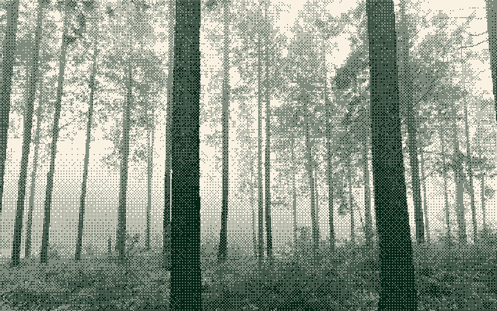

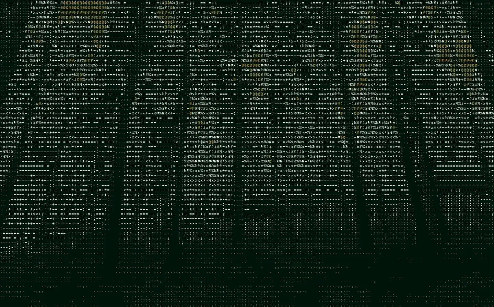

Each live product sits on a specimen card, untouched, over its own photograph and algorithm. The status chip tells the truth: LIVE, BUILDING, PAUSED.
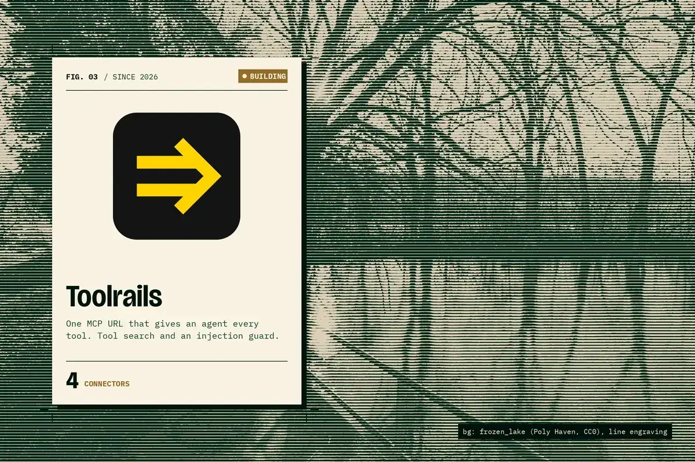
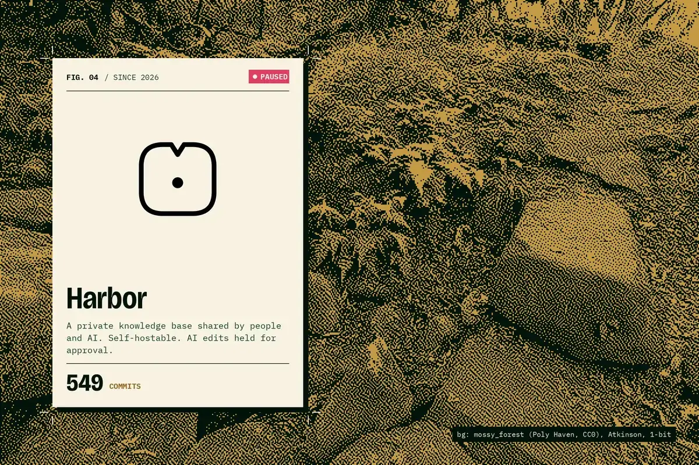
Luma2026 · retired · real logo
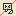
Polyglot Pilot2025 · retired
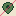
PinPoint2025 · retired
WebVakt2024 · retired
Joke Central2024 · retired
Tryggere Hyring2023 · retired
Early apps2021 · retired
Retired stand-ins: 12×12 pixel glyphs with a 50% Bayer fill and one red strike. No fake logos; the strike is the honesty.
Bands, grain, stickers and patterns to put between sections, behind cards and in margins.
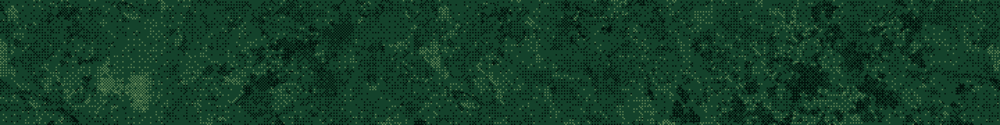
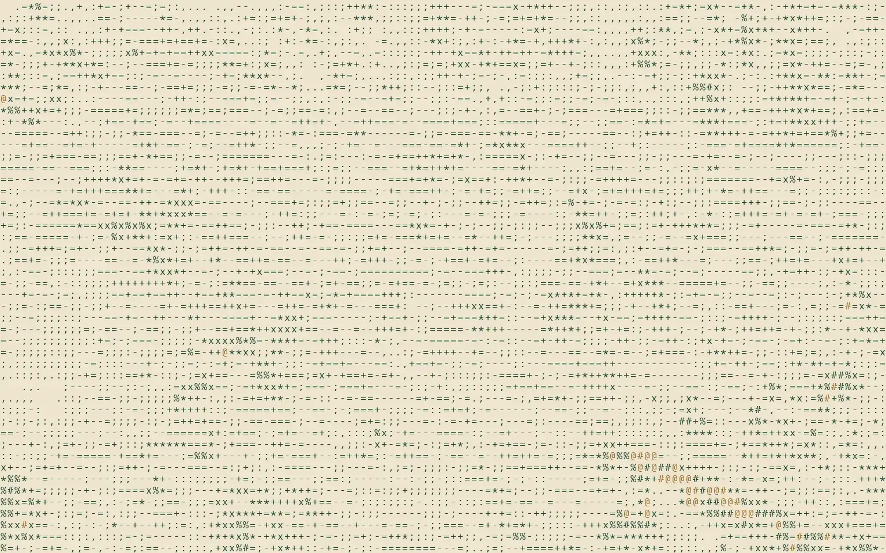

js/dither.js, no dependencies. Renders the real photo as 1-bit or ASCII on canvas, live. The pointer opens a lens onto the untouched photograph. The threshold breathes (±3%, every 6 s). Standalone demo: demo/dither-lens.html.
motion.css + motion.js. GSAP 3.13 with ScrollTrigger, Draggable and Flip, vendored in vendor/. Every animation stops under prefers-reduced-motion.